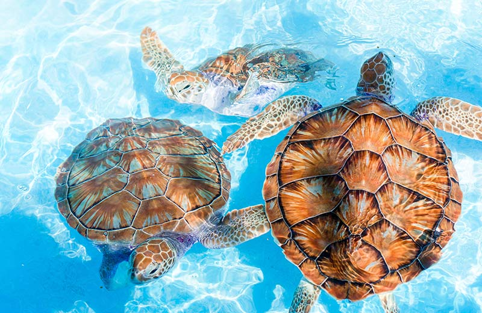
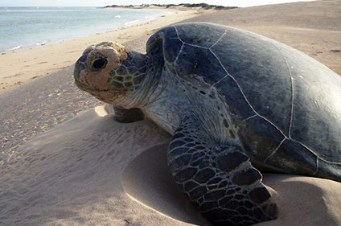
 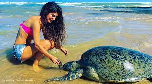
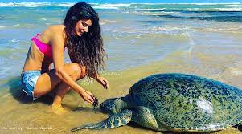
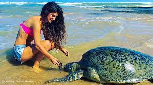
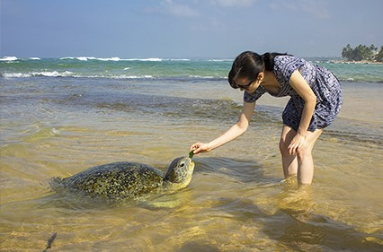
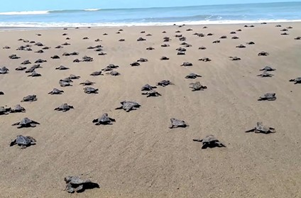
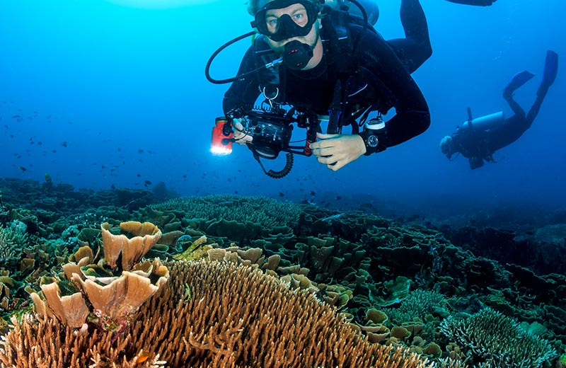
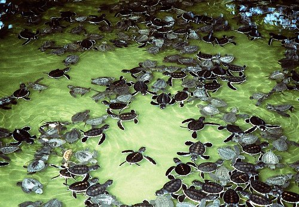

 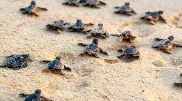
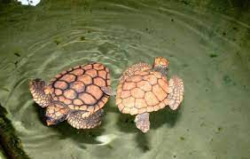
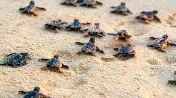
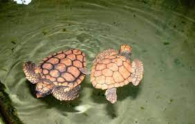
Preserving and Protecting Sri Lanka's Sea Turtles
The Hikkaduwa Turtle Hatchery, located in the coastal town of Hikkaduwa, is a renowned conservation center dedicated to the preservation of Sri Lanka's sea turtles. Their mission is two-fold: ensuring the survival of endangered turtle species and raising awareness about turtle conservation. The hatchery actively protects nests, closely monitoring nesting beaches and releasing hatchlings into the ocean. It also serves as a rehabilitation center, providing medical care to injured turtles before their release. Visitors can learn about turtle species, life cycles, and conservation challenges through educational programs and exhibits. The hatchery promotes responsible tourism and sustainable practices, encouraging respect for natural habitats. As a symbol of hope, the Hikkaduwa Turtle Hatchery strives to secure the future of sea turtles, leaving a positive impact on both the local ecosystem and global conservation endeavors.
Remember, when engaging in any activities, it is important to follow guidelines and respect the turtles' well-being and natural environment.
Enjoy your time at the Hikkaduwa Turtle Hatchery while contributing to the conservation of these magnificent creatures.
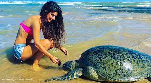
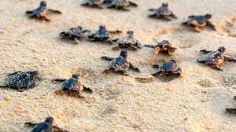
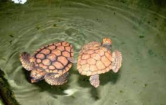